Perfumes en tubo
Descubre fragancias exclusivas que definen la elegancia.
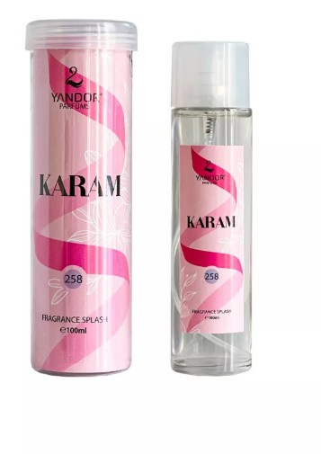
Inspirado en yara lattafa (100 ml) | Elixir
$14.000
Perfume en Tubo para Mujer Karam de marca Yandor equivalente a la fragancia Yara de Lattafa.
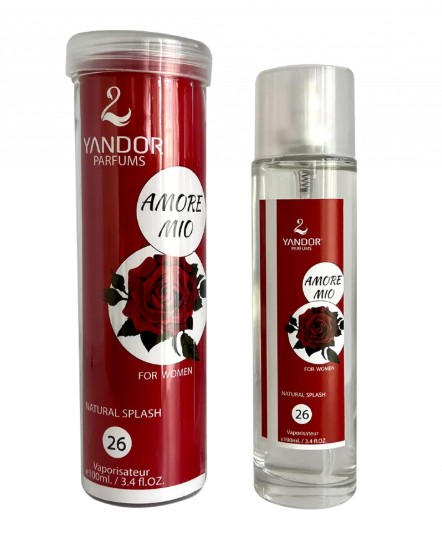
Inspirado en Amor Amor de Cacharel (100 ml) | Elixir
$14.000
Perfume en Tubo para Mujer Amore Mío de marca Yandor equivalente a la fragancia Amor Amor de Cacharel.
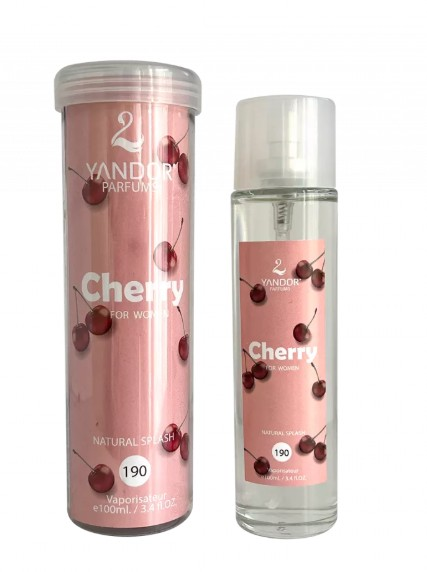
Inspirado en Cherry In The Air de Escada (100 ml) | Elixir
$14.000
Perfume en Tubo para Mujer Cherry de marca Yandor equivalente a la fragancia Cherry In The Air de Escada.
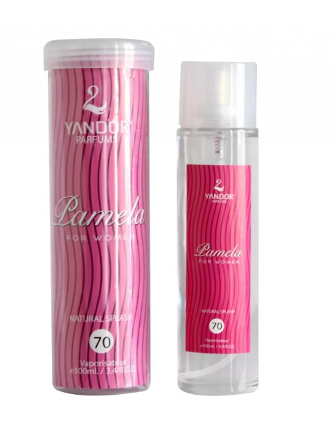
Inspirado en Paris Hilton de Paris Hilton (100 ml) | Good Chic
$14.000
Perfume en Tubo para Mujer Pamela de marca Yandor equivalente a la fragancia Paris Hilton de Paris Hilton.
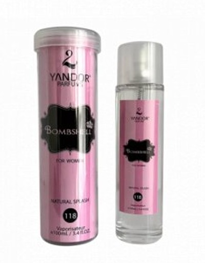
Inspirado en Bombshell de Victoria's Secret (100 ml) | Bombshell
$14.000
Perfume en Tubo para Dama Bombshell de marca Yandor equivalente a la fragancia Bombshell de Victoria's Secret.
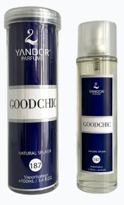
Inspirado en Good Girl de Carolina Herrera (100 ml) | Good Chic
$14.000
Perfume en Tubo para Mujer Good Chic de marca Yandor equivalente a la fragancia Good Girl de Carolina Herrera
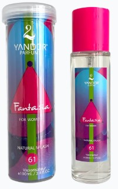
Inspirado en Fantasy de Britney Spears (100 ml) | Fantasia
$14.000
Perfume en Tubo para Mujer Fantasía de marca Yandor equivalente a la fragancia Fantasy de Britney Spears
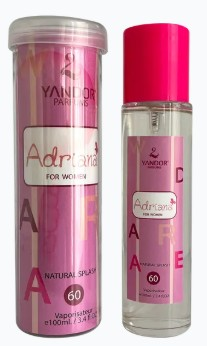
Inspirado en Cloud de Ariana Grande (100 ml) | Adriana
$14.000
Perfume en Tubo para Mujer Adriana de marca Yandor equivalente a la fragancia Cloud de Ariana Grande.
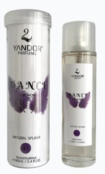
Inspirado en Can Can de Paris Hilton (100 ml) | Dance
$14.000
Perfume en Tubo para Mujer Dance de marca Yandor equivalente a la fragancia Can Can de Paris Hilton
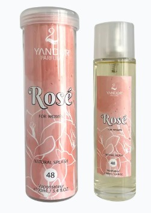
Inspirado en 212 VIP Rosé de Carolina Herrera (100 ml) | Rosé
$14.000
Perfume en Tubo para Mujer Rosé de marca Yandor equivalente a la fragancia 212 VIP Rosé de Carolina Herrera
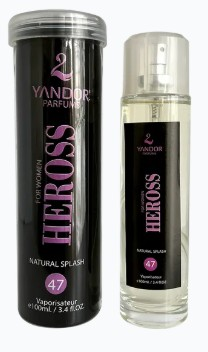
Inspirado en Heiress de Paris Hilton (100 ml) | Heross
$14.000
Perfume en Tubo para Mujer Heross de marca Yandor equivalente a la fragancia Heiress de Paris Hilton
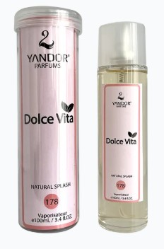
Inspirado en La Vida es Bella de Lancome (100 ml) | Dolce Vita
$14.000
Perfume en Tubo para Mujer Dolce Vita de marca Yandor equivalente a la fragancia La Vida Es Bella de Lancome
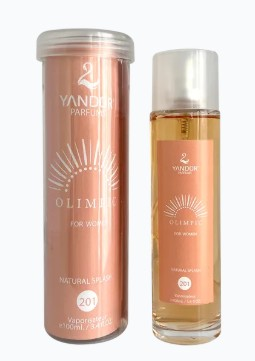
Inspirado en Olympea de Paco Rabanne (100 ml) | Olimpic
$14.000
Perfume en Tubo para Mujer Olimpic de marca Yandor equivalente a la fragancia Olympea de Paco Rabanne
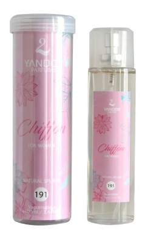
Inspirado en Pink Chiffon de Bath & Body Works (100 ml) | Chiffon
$14.000
Perfume en Tubo para Mujer Chiffon de marca Yandor equivalente a la fragancia Pink Chiffon de Bath & Body Works
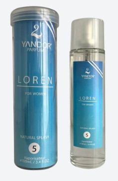
Inspirado en Ralph de Ralph Lauren (100 ml) | Loren
$14.000
Perfume en Tubo para Mujer Loren de marca Yandor equivalente a la fragancia Ralph de Ralph Lauren
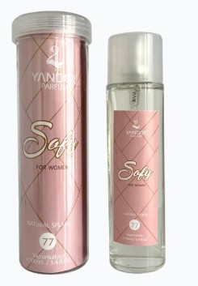
Inspirado en Sofia de Sofia Vergara (100 ml) | Sofy
$14.000
Perfume en Tubo para Mujer Sofy de marca Yandor equivalente a la fragancia Sofia de Sofia Vergara
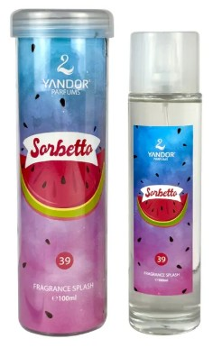
Inspirado en Sorbetto Rosso de Escada (100 ml) | Sorbetto
$14.000
Perfume en Tubo para Mujer Sorbetto de marca Yandor equivalente a la fragancia Sorbetto Rosso de Escada
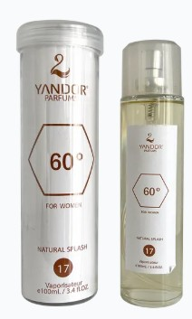
Inspirado en 360° de Perry Ellis (100 ml) | 60°
$14.000
Perfume en Tubo para Hombre Bad de marca Yandor equivalente a la fragancia Bad de Diesel
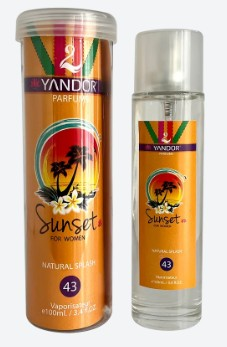
Inspirado en Taj Sunset de Escada (100 ml) | Sunset
$14.000
Perfume en Tubo para Mujer Sunset de marca Yandor equivalente a la fragancia Taj Sunset de Escada
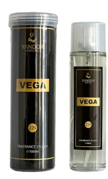
Inspirado en Ahli Vega (100 ml) | Vega
$14.000
Perfume en Tubo Unisex Vega de marca Yandor equivalente a la fragancia Ahli Vega.
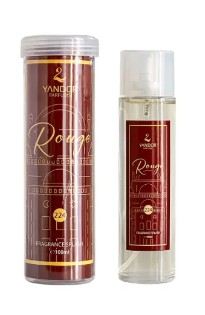
Inspirado en Amber Rouge de Orientica (100 ml) | Rouge
$14.000
Perfume en Tubo Unisex Rouge de marca Yandor equivalente a la fragancia Amber Rouge de Orientica.
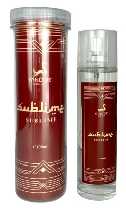
Tubo Inspirado Bade'e Al Oud Sublime de Lattafa (100 ml)| Sublime
$14.000
Perfume en Tubo Unisex Sublime de marca Yandor equivalente a la fragancia Bade'e Al Oud Sublime de Lattafa

Tubo Inspirado Bade'e Al Oud Amethyst de lattafa (100 ml)| Amethyst
$14.000
Perfume en Tubo Unisex Amethyst de marca Yandor equivalente a la fragancia Bade'e Al Oud Amethyst de Lattafa
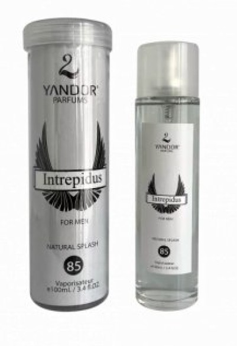
Tubo Inspirado en Invictus de Paco Rabanne (100 ml)| Interpidus
$14.000
Perfume en Tubo Caballero Invictus de marca Yandor equivalente a la fragancia Invictus de Paco Rabanne
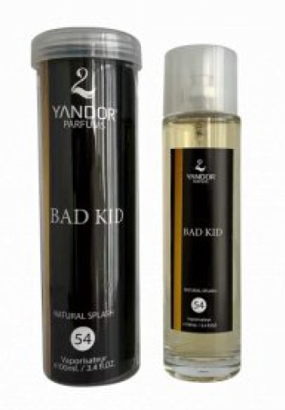
Tubo Inspirado en Bad Boy de Carolina Herrera (100 ml)| Bad Kid
$14.000
Perfume en Tubo Caballero Bad Boy de marca Yandor equivalente a la fragancia Bad Boy de Carolina Herrera
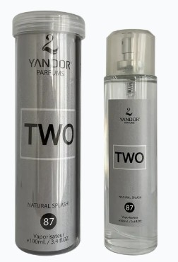
Inspirado en 212 de Carolina Herrera (100 ml) | Two
$14.000
Perfume en Tubo para Hombre Two de marca Yandor equivalente a la fragancia 212 de Carolina Herrera
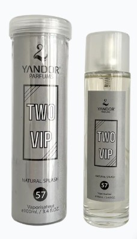
Inspirado en 212 VIP de Carolina Herrera (100 ml) | Two VIP
$14.000
Perfume en Tubo para Hombre Two VIP de marca Yandor equivalente a la fragancia 212 VIP de Carolina Herrera
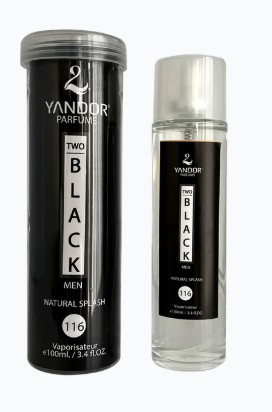
Inspirado en 212 VIP Black de Carolina Herrera (100 ml) | Two Black
$14.000
Perfume en Tubo para Hombre Two Black de marca Yandor equivalente a la fragancia 212 VIP Black de Carolina Herrera
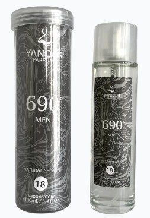
Inspirado en 690° de Perry Ellis (100 ml) | 690°
$14.000
Perfume en Tubo para Hombre 690° de marca Yandor equivalente a la fragancia 360° de Perry Ellis
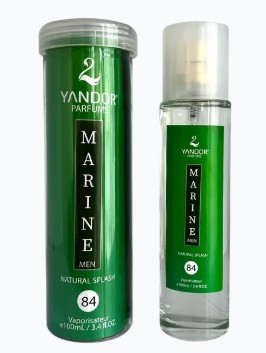
Inspirado en Aqva Marine de Bvlgari (100 ml) | Marine
$14.000
Perfume en Tubo para Hombre Marine de marca Yandor equivalente a la fragancia Aqva Marine de Bvlgari
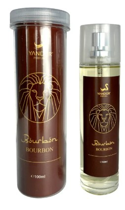
Tubo Inspirado en Asad Bourbon Lattafa (100 ml) |Bourbon
$14.000
Perfume en Tubo para Hombre Bourbon de marca Yandor equivalente a la fragancia Asad Bourbon de Lattafax
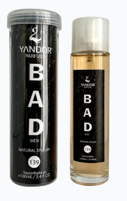
Inspirado en Bad de Diesel (100 ml) | Bad
$14.000
ga de marca Yandor equivalente a la fragancia Ahli Vega.
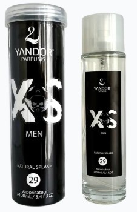
Inspirado en Black XS de Paco Rabanne (100 ml) | XS Men
$14.000
Perfume en Tubo para Hombre XS Men de marca Yandor equivalente a la fragancia Black XS de Paco Rabanne
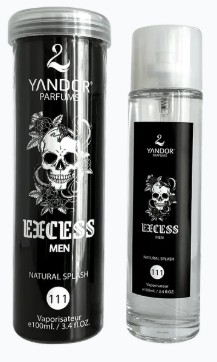
Inspirado en Black XS L'Exces de Paco Rabanne (100 ml) | Excess Men
$14.000
Perfume en Tubo para Hombre Excess Men de marca Yandor equivalente a la fragancia Black XS L'Exces de Paco Rabanne.
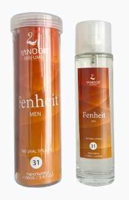
Inspirado en Fahrenheit de Christian Dior (100 ml) | Fenheit
$14.000
Perfume en Tubo para Hombre Fenheit de marca Yandor equivalente a la fragancia Fahrenheit de Christian Dior
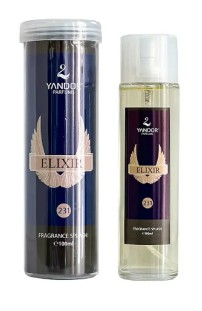
Inspirado en Invictus Victory Elixir de Paco Rabanne (100 ml) | Elixir
$14.000
Perfume en Tubo Elixir para hombre de marca Yandor equivalente a la fragancia Invictus Victory Elixir de Paco Rabanne.
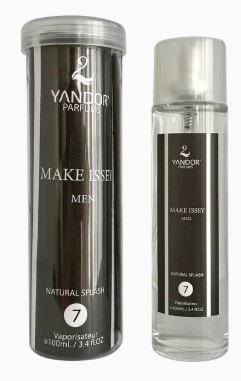
Inspirado en Issey Miyake de Issey Miyake (100 ml) | Make Issey
$14.000
Perfume en Tubo para Hombre Make Issey de marca Yandor equivalente a la fragancia Issey Miyake de Issey Miyake.
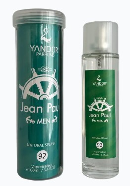
Inspirado en Jean Paul Gaultier de Jean Paul Gaultier (100 ml) | Jean Paul
$14.000
Perfume en Tubo para Hombre Jean Paul de marca Yandor equivalente a la fragancia Jean Paul Gaultier de Jean Paul Gaultier
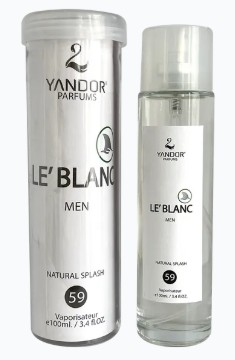
Inspirado en L12.12 Blanc de Lacoste (100 ml) | Le Blanc
$14.000
Perfume en Tubo para Hombre Le Blanc de marca Yandor equivalente a la fragancia L12.12 Blanc de Lacoste
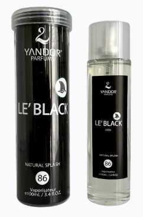
Inspirado en Lacoste Negra de Lacoste (100 ml) | Le Black
$14.000
Perfume en Tubo para Hombre Le Black de marca Yandor equivalente a la fragancia Lacoste Negra de Lacoste
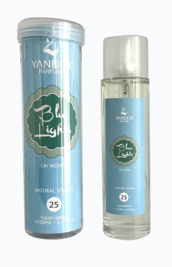
Inspirado en Light Blue de D&G (100 ml) | Blue Lights
$14.000
Perfume en Tubo para Mujer Blue Lights de marca Yandor equivalente a la fragancia Light Blue de D&G
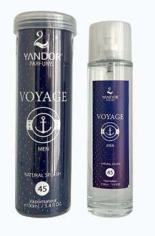
Inspirado en Nautica Voyage de Nautica (100 ml) | Voyage
$14.000
Perfume en Tubo para Hombre Voyage de marca Yandor equivalente a la fragancia Nautica Voyage de Nautica
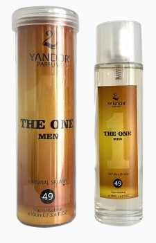
Inspirado en One Millon de Paco Rabanne (100 ml) | The One
$14.000
Perfume en Tubo para Hombre de marca Yandor equivalente a la fragancia One Millon de Paco Rabanne
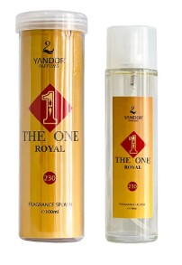
Inspirado en One Million Royal de Paco Rabanne (100 ml) | The One Royal
$14.000
Perfume en Tubo The One Royal para hombre de marca Yandor equivalente a la fragancia One Million Royal de Paco Rabanne.
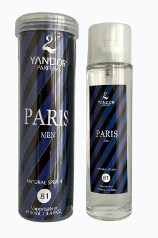
Inspirado en Paris Hilton de Paris Hilton (100 ml) | Paris Men
$14.000
Perfume en Tubo para Hombre Paris Men de marca Yandor equivalente a la fragancia Paris Hilton de Paris Hilton
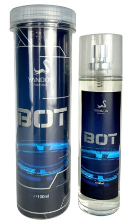
Inspirado en Phantom Intense de Rabanne (100 ml) |Bot
$14.000
Perfume en Tubo Hombre Bot de marca Yandor equivalente a la fragancia Phantom Intense de Rabanne.Este producto pertenece a la línea de Perfumes en Tubo.
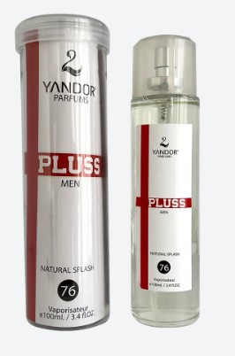
Inspirado en Plus de Diesel (100 ml) | Pluss
$14.000
Perfume en Tubo para Hombre Pluss de marca Yandor equivalente a la fragancia Plus Plus de Diesel
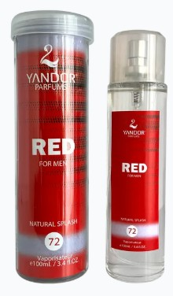
Inspirado en Red de Lacoste (100 ml) | Red
$14.000
Perfume en Tubo para Hombre Red de marca Yandor equivalente a la fragancia Red de Lacoste
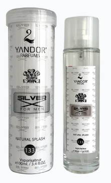
Inspirado en Silver Mountain Water de Creed (100 ml) | Silver
$14.000
Perfume en Tubo Unisex Silver de marca Yandor equivalente a la fragancia Silver Mountain Water de Creed
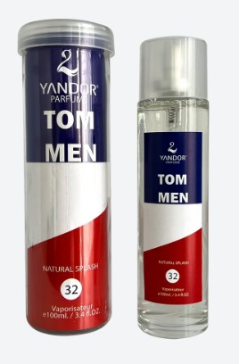
Inspirado en Tommy de Tommy Hilfiger (100 ml) | Tom Men
$14.000
Perfume en Tubo para Hombre Tom Men de marca Yandor equivalente a la fragancia Tommy de Tommy Hilfiger
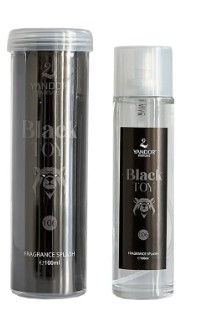
Inspirado en Toy Boy de Moschino (100 ml) | Black Toy
$14.000
Perfume en Tubo para Hombre Black Toy de marca Yandor equivalente a la fragancia Toy Boy de Moschino.
Inspirado en Unlimited de Hugo Boss (100 ml) | Infinite
$14.000
Perfume en Tubo para Hombre Infinite de marca Yandor equivalente a la fragancia Unlimited de Hugo Boss.
Inspirado en Amber Oud Gold de Al Haramain (100 ml) | Gold
$14.000
Perfume en Tubo Unisex Gold de marca Yandor equivalente a la fragancia Amber Oud Gold de Al Haramain.